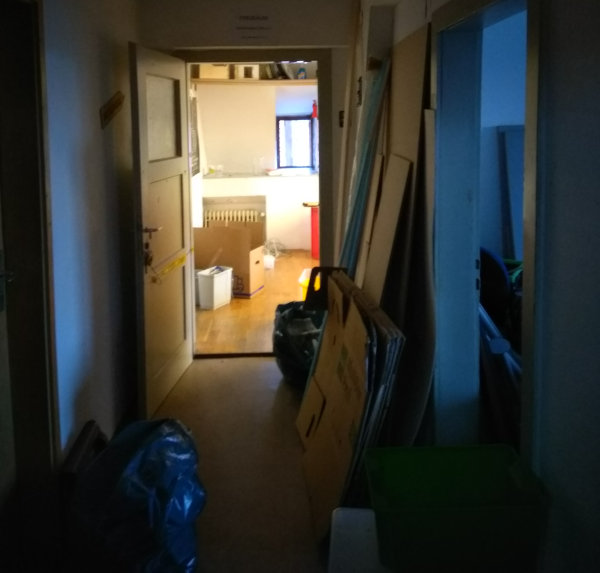
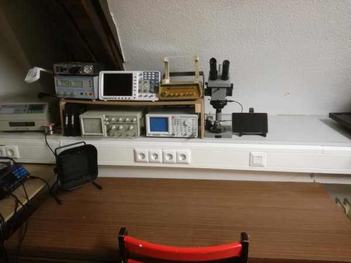
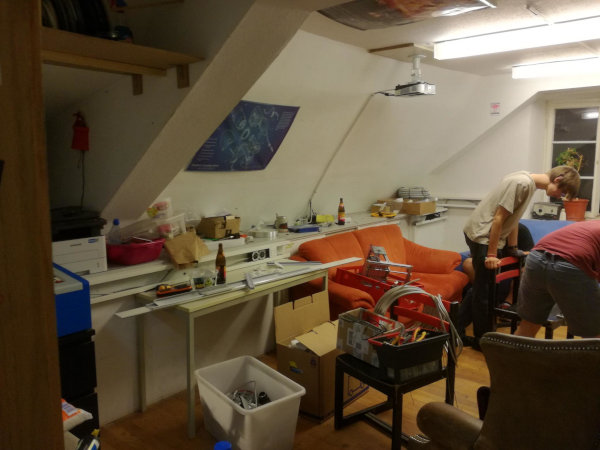
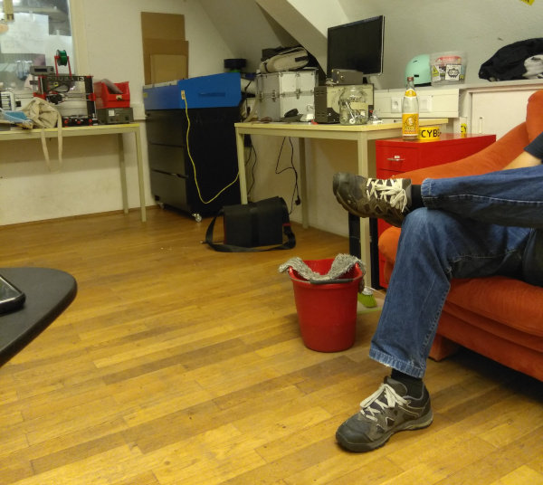

Es wächst zusammen, was zusammen gehört. Da sich die Mitglieder im Freiraum und CCC Ulm gut kennen und viele bereits in beiden Vereinen aktiv sind, vertritt der Freiraum nun offiziell den CCC Ulm als Erfa. Damit bekommen wir mehr Rückendeckung vom Bundes-CCC bei Veranstaltungen wie der CPU. Der Freiraum ist auerßdem dem Verband offener Werkstätten beitreten, über die wir eine zusätzliche Versicherung der Werkzeuge und Räumlichkeiten bekommen.
Durch die neue Struktur hoffen wir jetzt auch häufiger Workshops (wie z.B. den Schlüsseldienst-Workshop von Roland) und Vorträge anbieten zu können. In den letzten Jahren wurde der Freiraum durch den Ausbau der Werkstatt und zusätzliche Maschinen (3D-Drucker, Laser, Fräse etc.) immer voller, so dass Vorträge oft mit starker Platznot verbunden waren. FreeFM hat dem Freiraum nun den direkten Nebenraum zum Freiraum verbunden mit einer fairen Mietpreiserhöhung überlassen - das entspannt die Situation wieder und schafft mehr Raum zum chillen.
Der neue Raum soll natürlich auch gut ausgestattet sein, das ist eine der Aufgaben für die kommenden Monate. Wir haben in den letzten 3 Monaten bereits im alten Raum die Verkabelung der Steck- und Netzwerkdosen erneuert, die Küche gefliest und renoviert. Neben des Einrichtens des neuen Raums stehen noch das Streichen des Flurs, die Reinigung des Bodens und das Abschleifen der alten Türen auf unserer Agenda - wir wollen ja, dass sich alle Gäste wohlfühlen.
Wenn das nächste mal die Tür hinter einem zufällt und man den Schlüssel vergessen hat, wird man sich wünschen am 01.11. 20:00h bei Rolands Schlüsseldienst-Workshop im Freiraum gewesen zu sein :)
Wir hatten vor unserem Umbau und der CPU18 regelmäßig Vorträge am letzen Donnerstag im Monat gehalten. Deswegen hier schon mal eine Ankündigung: Peter spricht am 25.10. über Schrittmotoren, Jani am 29.11. über SDR. Beim SDR Vortrag wollen wir ein kleines Hands-On machen (Funksteckdose, Autoschlüssel etc.)
Nachdem wir die letzten Jahre bedenklich viele Mehrfachsteckdosen in Reihe geschaltet haben, ist es an der Zeit Brüstungskanäle zu verlegen. Simon taufte das Projekt “unser Stuttgart21”, der Umbau wird sich wohl noch über die nächste Woche hinziehen.

Im letzten Monat gab es außerdem noch eine Mitgliederversammlung, bei der wir beschlossen haben die CPU19 durchzuführen. Es gab eine kurze Diskussion über den Namen “Chaos Party Ulm”, da die Kritik geäußert wurde, dass eine Party nicht über drei Tage geht. Daraus ergab sich der neue Name - Chabos Pushen Upstream. Wie in der letzten Datenschleuder schon zu sehen war, gab es einen Merge zwischen dem Erfa CCC Ulm und dem Freiraum Hackerspace e.V. Dazu aber später mehr.
Update

Die Werkstatt ist soweit fertig ausgestattet, Brüstungskanäle mit Ethernet, Strom und Druckluft.

Unser Hauptraum ist noch under construction wir hoffen, dass Ende September alles erledigt ist. Bis dahin gibt es weiterhin die offenen Donnerstage, wer will kann gerne vorbeikommen und helfen.
Update 2

Yeah durchgewischt, jetzt nur noch alles wieder einräumen.
Die #cpu18 ist vorbei und wir brauchen erstmal eine Pause, diesen Donnerstag (14.06.) gibts kein offenes Treffen. Hört doch bis dahin einfach in das DJset von @CouchSofa rein …
Vom 08.-10.6.2018 findet in der Mensa der Uni Ulm die erste Chaosparty Ulm statt. Sie ist ein kleineres Chaosevent, bei dem sich viele Technikinteressierte aus ganz Deutschland (und weiter) zusammenkommen um sich gemeinsam ein Wochenende lang in Projekte zu vertiefen und sich über alle möglichen Themen auszutauschen.
Es wird Vorträge und Workshops vor allem zu hardwaretechnischen Themen geben und auch für Verpflegung ist durchgehend gesorgt. Du findest auf unserer Website [https://chaos-party-ulm.de] noch mehr Infos zu dem Event. Sollten Fragen aufkommen, kannst Du uns per Mail unter (kontakt@chaos-party-ulm.de)[mailto:kontakt@chaos-party-ulm.de] oder auf hackint in #cpu erreichen. Wir freuen uns auf Dich!